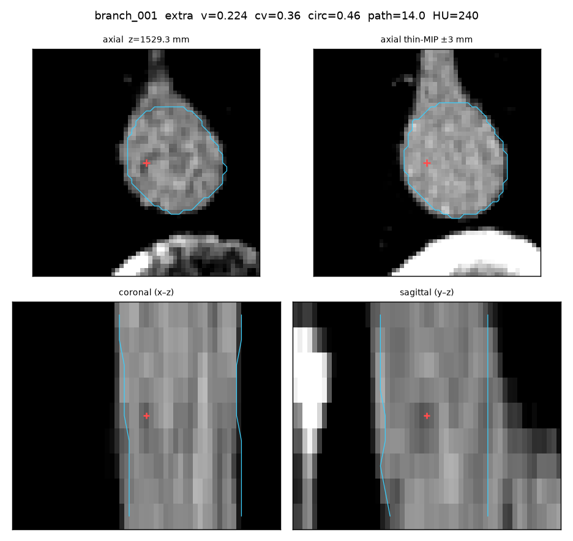
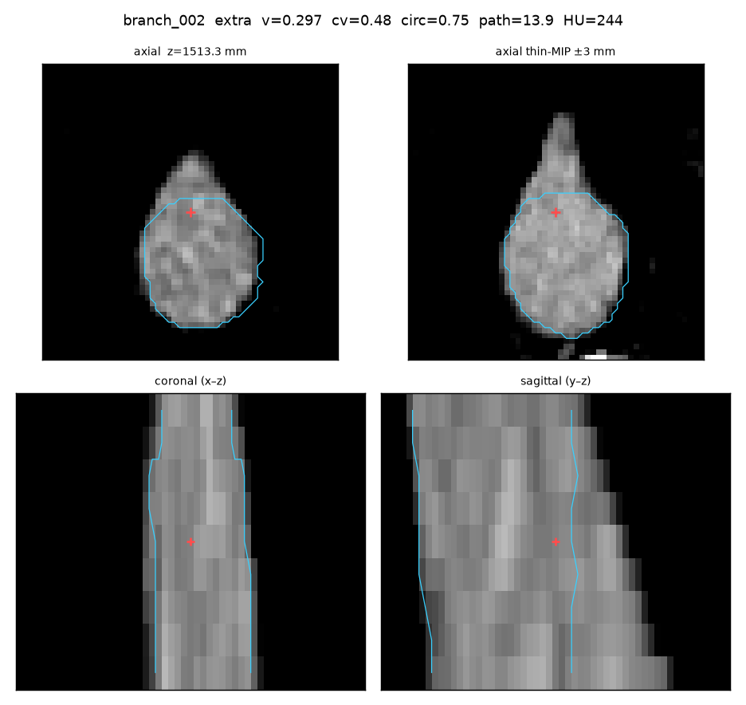
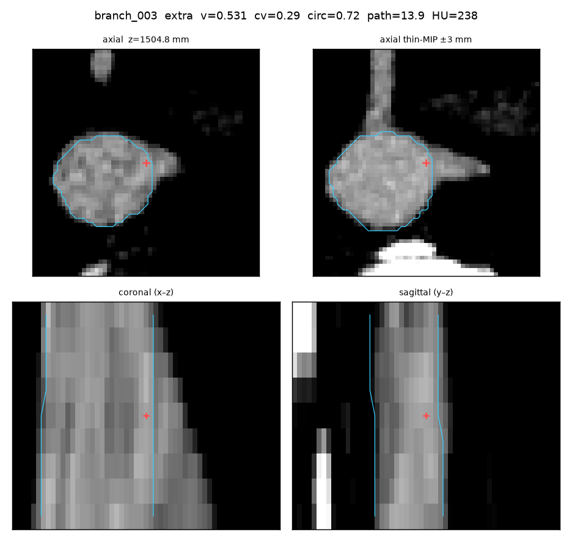
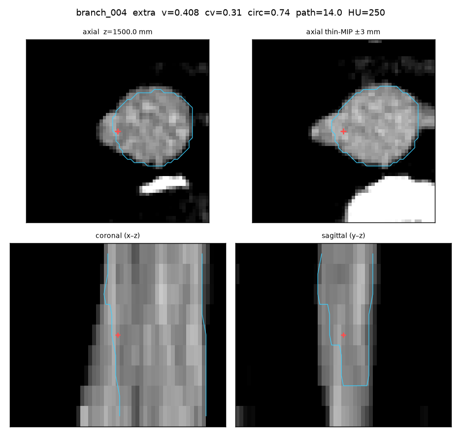
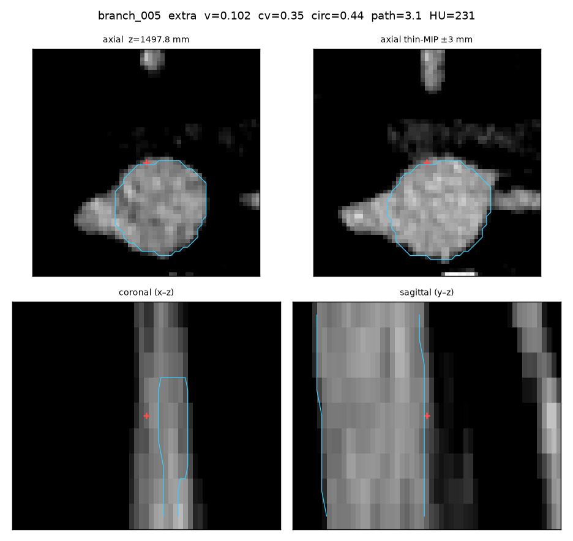
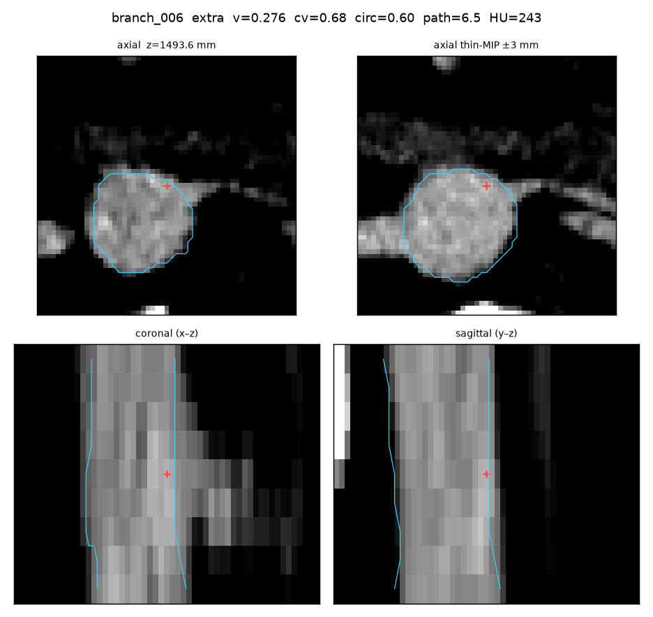
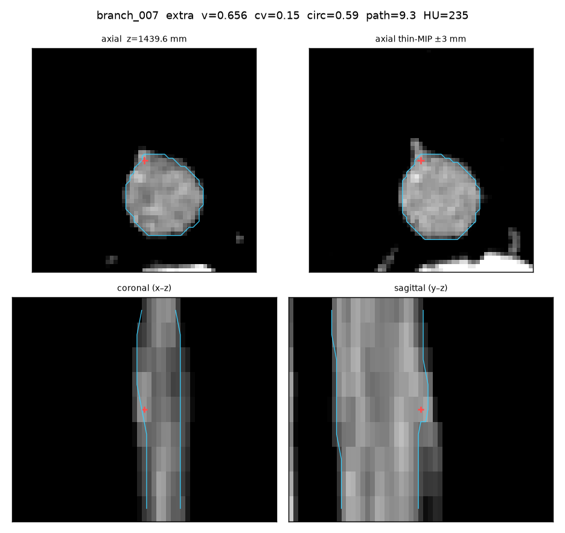

branch_001 extra
gt=— err=— z=1529.33 r=1.8273
- vesselness 0.2241
- radius_cv 0.3615
- circularity 0.4554
- path_mm 13.97
- mean_HU 240.0

gt=— err=— z=1529.33 r=1.8273

gt=— err=— z=1513.28 r=1.6257

gt=— err=— z=1504.83 r=1.5056

gt=— err=— z=1500.0 r=1.8457

gt=— err=— z=1497.78 r=1.8773

gt=— err=— z=1493.61 r=0.9642

gt=— err=— z=1439.57 r=0.9671
